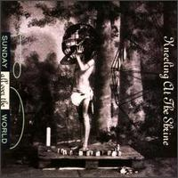
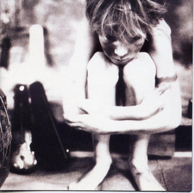
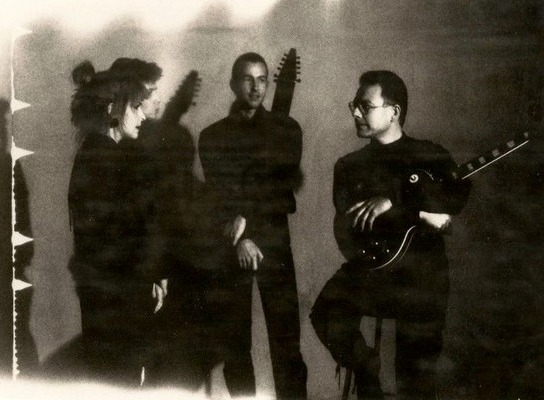
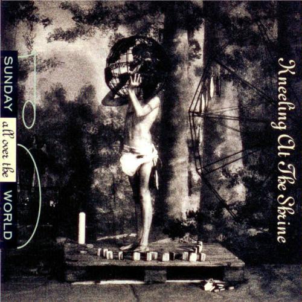

Sunday all over the world
Sunday all over the world
|
|
|
 (Arrodillándose en la capilla) Grabado en 1991 por el grupo Sunday all over the world, formado por Fripp, su esposa Toyah Willcox, Trey Gunn y Paul Beavis. En la cubierta del CD se lee: "Las madres destetan y limpian a sus hijos, los periódicos imprimen en sus palmas, el olor de la carne está en el aire, asándose sobre las notas de los salmos pecadores."
Todos los temas hechos por el grupo, excepto el tema 11, Freedom (de Fripp/Willcox) Notas * La banda se formó en 1988 e hizo giras en vivo durante ese año y el siguiente. Se disolvió después de lanzarse el album. *Simultáneamente a la grabación del disco se grabó el album solista de Toyah Willcox "Ophelia's shadow", en el que participó la misma sección rítmica, Gunn y Beavis, y el guitarrista Tony Geballe, que al igual que Gunn fue miembro de The league of crafty guitarists en los '80. Dos temas que no se incorporaron a este disco de Sunday, ya grabados por la banda incluyendo a Fripp, se los integró al de Willcox, que fue lanzado dos meses antes que este album del grupo.
 Foto del interior de la cubierta del disco Willcox, Beavis, Gunn y Fripp |